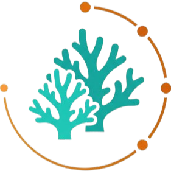

To provide individual coral monitoring to everyone so that we can save the world's reefs step by step, coral by coral
Leave tagging for hours, manually measuring corals and tedious spreadsheet magic in the past. Coral Companion does it for you.
Upload survey photos, match observations and compare metrics
Coral Companion is developed in close partnership with restoration teams and open-source contributors.
Are you a practitioner, funder, or just interested in Coral Companion? We are curious to hear from you! Drop us a note below.